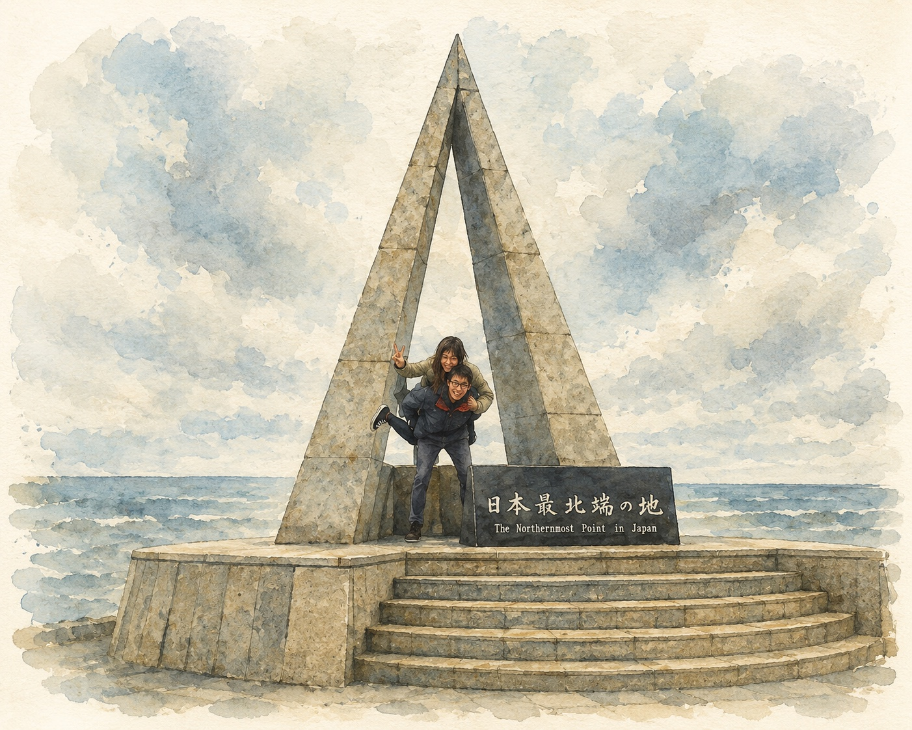

Standing at Japan’s northernmost point, someone pointed across the sea and said,
“On a clear day, you can see Sakhalin.”
I looked.
That day, the sea and the sky had quietly become one. The horizon dissolved into the fog.
I couldn’t see the island.
Yet somehow, more than a decade later, I’ve never stopped seeing what that journey gave me.
HOW FAR CAN WE GO?
It was May 2013, a year before my wife and I got married.
By then, we’d already fallen in love with Japan. We’d explored well-known places like Sapporo and Hakodate.
But this journey felt different.
We unfolded the JR route map and asked ourselves a simple question.
“How far can we go?”
I wanted to go somewhere I knew almost nothing about. Somewhere that was barely mentioned in travel guidebooks. Somewhere beyond the ordinary, at the very edge of Hokkaido.
That place was Wakkanai.
So we boarded another train and simply kept heading north.
No plan.
Just curiosity.
HEADING NORTH
The further the train travelled, the quieter everything became.
Cities gradually disappeared behind us.
Outside the window, the vast landscape of Daisetsuzan unfolded beneath the spring sky. Hours later came the distant silhouette of Rishiri Island, rising quietly beyond the sea.
I found myself spending more time looking out of the window than talking.
Without realising it, the journey itself had already become the destination.
By the time we arrived in Wakkanai, even the air felt different.
I still remember the smell before I remember the streets.
Fresh sea air mixed with the scent of fish drifting from the harbour.
Small.
Quiet.
Simple.
Wakkanai wasn’t trying to impress anyone.
It felt like a fishing town that had quietly made peace with being exactly what it was.
Even in May, northern Hokkaido was freezing.
We stood inside a tiny bus shelter, hiding from the wind while waiting for the bus to Cape Sōya, wishing we had packed warmer clothes.
Then the bus arrived.
AT THE EDGE
That short bus ride has stayed with me ever since.
There were only three people on board.
The driver.
My wife.
And me.
After watching us through the mirror for a while, he finally asked,
“Where are you from?”
“Hong Kong.”
He smiled.
Then he asked the obvious question.
“Why Wakkanai?”
I smiled back.
Looking back, I still don’t have a logical answer.
Curiosity was enough.
Eventually, the bus reached Cape Sōya.
At the edge of Japan stood the triangular monument marking the country’s northernmost point.
It was a cloudy day, and unfortunately, we couldn’t see Sakhalin with the naked eye.
Strangely, neither of us felt disappointed.
We looked at each other and laughed.
We’d made it.
I lifted Karina onto my back, and we took a photograph together.
We weren’t trying to prove anything.
We simply wanted to celebrate the moment.
To make fun of ourselves.
To remember how wonderfully unreasonable we had been.
Two young people had travelled all this way simply because they wondered what was waiting at the edge of a map.

I still love that photograph.
Not because it captures where we were.
But because it captures who we were.
THE MAP INSIDE ME
Looking back, Wakkanai didn’t change my life in one dramatic moment.
It quietly removed a boundary I didn’t know I was carrying.
Growing up in Hong Kong, I never realised how much my surroundings had shaped the map inside my mind.
My horizon was always interrupted.
Tower after tower.
Street after street.
Crowds.
Deadlines.
Even when I looked into the distance, there was always another building waiting for my eyes.
Travelling through places like Wakkanai gave me something I had rarely experienced before.
An uninterrupted horizon.
For the first time, I wasn’t just seeing further.
I was thinking further.
Standing there, I realised something I couldn’t yet put into words.
The world wasn’t becoming bigger.
The map inside me was.
The world becomes reachable the moment we stop assuming it is beyond us.